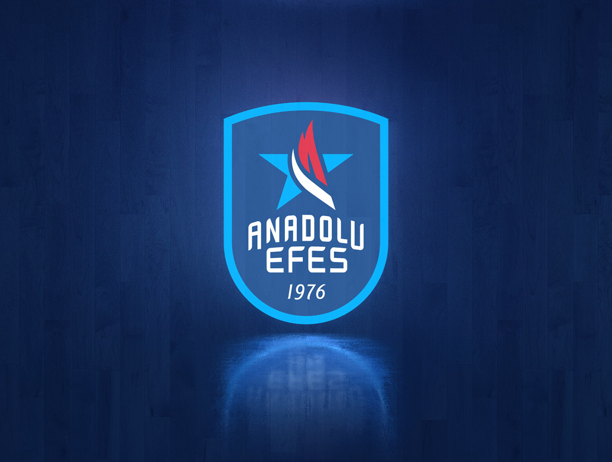

Son iki sezonun Turkish Airlines EuroLeague şampiyonu Anadolu Efes, Boğaziçi Üniversitesi Spor Kurulu tarafından bu yıl 12.’si düzenlenen Boğaziçi Üniversitesi Spor Ödülleri’ne damga vurdu. Türk basketbolunun en çok kupa kazanan takımı Anadolu Efes; En İyi Takım, En İyi Yönetici, En İyi Antrenör ve En İyi Basketbol Oyuncusu kategorilerinde ödül almayı başardı.
Boğaziçi Üniversitesi öğrencilerinin ve spor tutkunlarının oylarıyla yılın “enleri” seçildi. Boğaziçi Üniversitesi içerisindeki Albert Long Hall’de gerçekleştirilen törende farklı branşlardan spor insanları ödüllerine kavuştu.
Yılın en iyi takımı: Anadolu Efes
Turkish Airlines EuroLeague’de iki şampiyonluk kazanan tek Türk takımı olan Anadolu Efes’e, bir ödül de Boğaziçi Üniversitesi Spor Ödülleri’nde geldi. Boğaziçi Üniversitesi öğrencilerinin ve sporseverlerin yılın “En”lerini seçtiği organizasyonda, yılın en iyi takımı Anadolu Efes oldu.
Alper Yılmaz, “En İyi Spor Yöneticisi” ödülünü kazandı...
Anadolu Efes Spor Kulübü’nün Genel Direktörü Alper Yılmaz, Boğaziçi Spor Ödülleri 2022’de “En İyi Spor Yöneticisi” ödülünün sahibi oldu. Alper Yılmaz, Turkish Airlines EuroLeague’de de üst üste iki kez “Gianluigi Porelli EuroLeague Yılın Yöneticisi” olarak seçilmişti.
“En İyi Antrenör”, Ergin Ataman seçildi...
Anadolu Efes’e bir ödül de “En İyi Antrenör” kategorisinden geldi. Anadolu Efes’in başarılı başantrenörü Ergin Ataman, yılın En İyi Antrenörü ödülüne layık görüldü.
Vasilije Micić “En İyi Basketbol Oyuncusu” seçildi...
Anadolu Efes formasını 2018 yılından bu yana giyen Vasilije Micić, “En İyi Basketbol Oyuncusu” seçildi. 2021 ve 2022’deki Final Four’larda “En Değerli Oyuncu” seçilen başarılı Sırp basketbolcunun, Anadolu Efes kariyeri boyunca başta kazanılan üst üste kazanılan 2 EuroLeague şampiyonluğu olmak üzere, birçok başarıda imzası bulunuyor. Micic, 2020 - 2021 Turkish Airlines EuroLeague sezonunda da tüm ligin En Değerli Oyuncusu seçilmişti.

U16 A Ligi Final Grubu birinci hafta maçında Beşiktaş (B) ile karşılaşan Yıldız A (U16) Takımımız mücadeleden 97-49 galip ayrıldı. Bayrampaşa Spor Salonu’nda oynanan karşılaşmanın ilk yarısını da yıldızlarımız 59-20 önde tamamladı.
Takımımızda istatistikler şöyle oluştu:
Ömer Can 4 sayı, 6 ribaunt, 4 asist, 2 top çalma.
Can Böyük 6 sayı, 1 ribaunt, 4 asist.
Süleyman Şirin.
Kaan Çağlar 11 sayı, 1 ribaunt, 2 asist, 1 top çalma, 1 blok.
Resul Ekrem Darçın 5 sayı, 2 ribaunt, 2 asist, 1 top çalma.
Atahan Akbaş 2 sayı, 4 ribaunt, 10 asist, 2 top çalma.
Salih Ege Yaman 14 sayı, 11 ribaunt, 2 top çalma, 1 blok.
Akın Aksoy 7 sayı, 4 ribaunt, 2 asist, 1 top çalma, 1 blok.
Yiğit Efe Sezer 5 sayı, 5 ribaunt, 1 top çalma.
Ahmet Aldin Türkoğlu 12 sayı, 6 ribaunt, 1 asist, 3 top çalma.
Beren Demir Özdemir 2 sayı, 4 ribaunt, 1 asist, 1 top çalma, 1 blok.
Kaan Onat 29 sayı, 7 ribaunt. 4 asist, 2 top çalma.